In this part I used a pre-trained diffusion model called DeepFloyd to generate and edit images. DeepFloyd is a text-to-image model that takes text prompts and creates matching images. It works in two stages - first making a 64x64 image, then upscaling to 256x256.
Random seed used: 4206969420
DeepFloyd takes text prompts and generates matching images. The text first gets converted into an embedding vector that the model understands. Then the model runs a denoising process for some number of steps to create the image. More steps generally means better quality but takes longer.
Here are some generated images. The `num_inference_steps` parameter controls how many denoising steps to take. With only 5 steps the images are blurry and low quality, but with 20 steps they look much better:
num_inference_steps = 5:
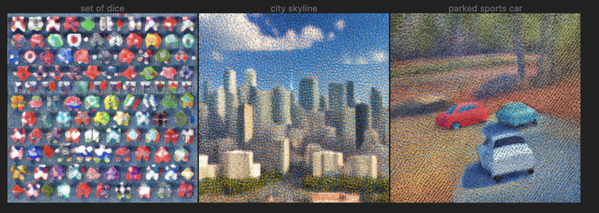
num_inference_steps = 20:
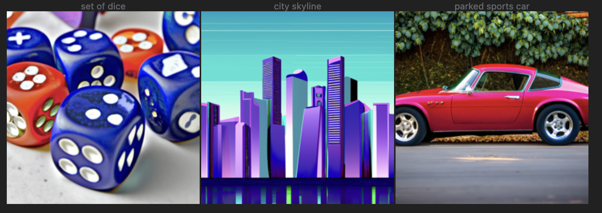
The difference is pretty clear. With more steps, details are sharper and the images match the prompts better. 20 steps is a good balance between quality and speed.
Diffusion models work by learning to remove noise from images. To train them, we need to add noise to clean images first. The forward process takes a clean image and adds Gaussian noise to it based on a timestep $t$. At $t=0$, we have a clean image. As $t$ increases toward 1000, the image becomes pure noise. The formula involves mixing the original image with random noise using coefficients $\sqrt{\bar{\alpha}_t}$ and $\sqrt{1-\bar{\alpha}_t}$, where these values come from a noise schedule that the model was trained on.
Here's what the Campanile looks like at different timesteps. You can see how it gradually becomes more and more noisy:
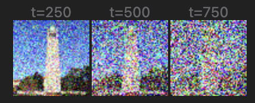
Before using the neural network, I tried removing noise using classical methods like Gaussian blur. The idea is that blurring might smooth out the noise. But this doesn't work well because blurring removes the noise AND the actual image details. The noise is too mixed in with the signal for simple filtering to separate them.
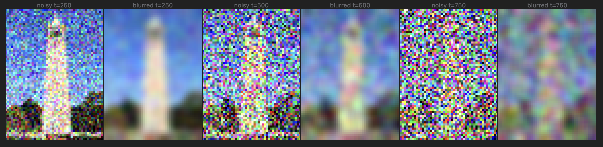
Now let's try using the actual diffusion model to denoise. The UNet in DeepFloyd was trained to predict the noise in an image given the noisy image and the timestep. Once we know the predicted noise, we can subtract it from the noisy image to get an estimate of the clean image. I used the text prompt "a high quality photo" as a generic condition. The one-step denoising takes the noisy images from before (at timesteps 250, 500, 750) and tries to recover the original in a single step.
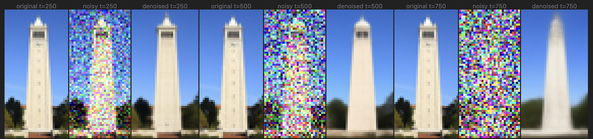
This works better than Gaussian blur, but still isn't perfect, especially at higher noise levels.
One-step denoising tries to go from noisy to clean in a single jump, which is hard. Iterative denoising is smarter - it takes many small steps, removing a little bit of noise at each step. I created a list of timesteps starting at 990 and going down to 0 with a stride of 30. At each step, the model predicts the noise, removes some of it, and then adds back a smaller amount of fresh noise. This "two steps forward, one step back" approach actually works really well because it lets the model gradually refine its estimate.
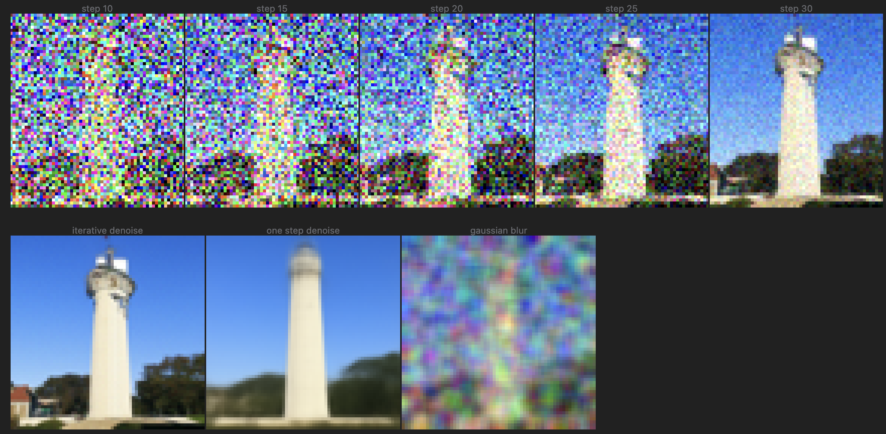
The iterative version produces much cleaner results than single-step denoising.
If we start the iterative denoising process from pure random noise (instead of a noisy version of a real image), we can generate completely new images from scratch. This is how diffusion models create images - they start with noise and gradually denoise it into something that looks real. I used the prompt "a high quality photo" and generated 5 samples:
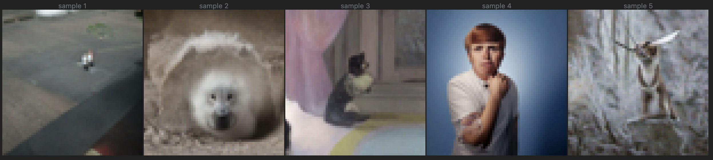
The samples above look okay but aren't that sharp or interesting. Classifier-Free Guidance makes the outputs much better. The idea is to run the model twice - once with the text condition and once without (using an empty prompt). Then we take the difference between them and amplify it. The formula is: $\epsilon = \epsilon_\text{uncond} + \gamma \cdot (\epsilon_\text{cond} - \epsilon_\text{uncond})$ where $\gamma$ is the guidance scale. Higher $\gamma$ means stronger adherence to the prompt but can also make things look weird if too high. I used $\gamma = 7$.
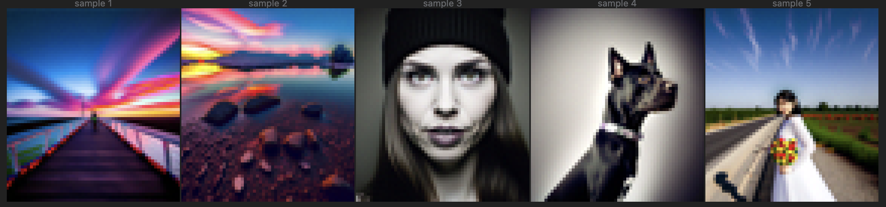
Instead of starting from pure noise, we can start from a real image with some noise added. By running iterative denoising from a middle timestep (not from the very beginning), we can "edit" an image while keeping its general structure. Lower starting indices mean less change to the original, while higher starting indices allow more dramatic edits. I tested this on the Campanile and two other images at noise levels [1, 3, 5, 7, 10, 20].
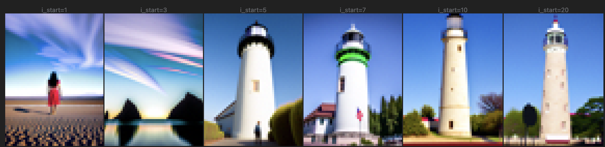
Campanile at different noise levels
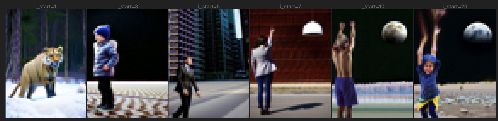
Steph Curry image at different noise levels
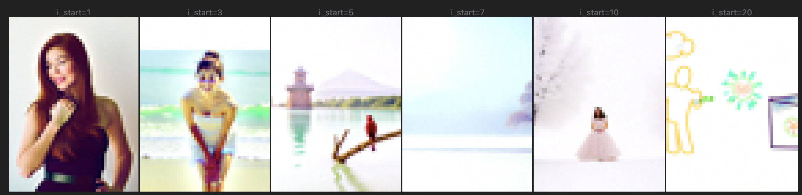
Mining image at different noise levels
The same technique works on any image, including hand-drawn sketches and photos from the internet. The model "projects" these images onto the manifold of natural-looking images. Hand-drawn images are especially fun because the model fills in details and makes them look more realistic.
Web image (Steph Curry):
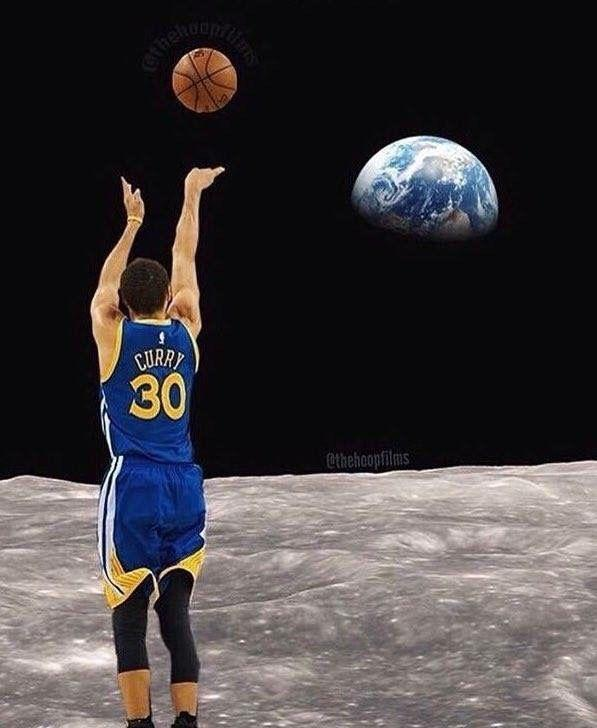
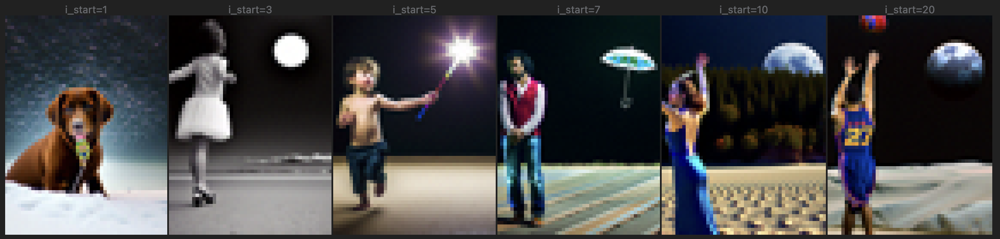
Hand-drawn images:
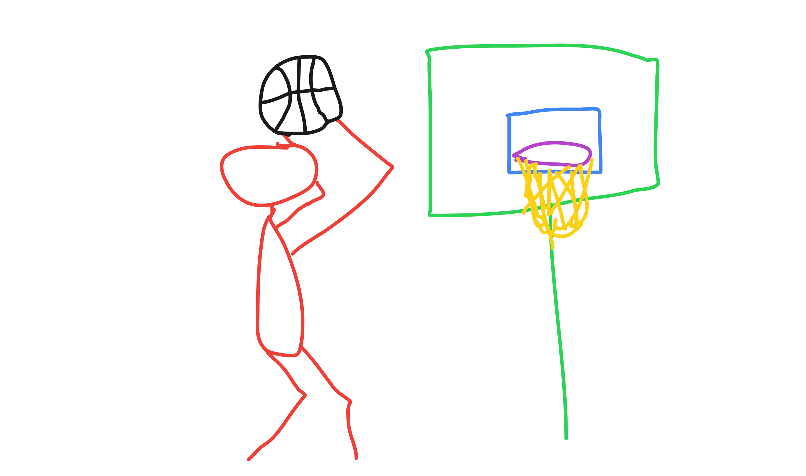
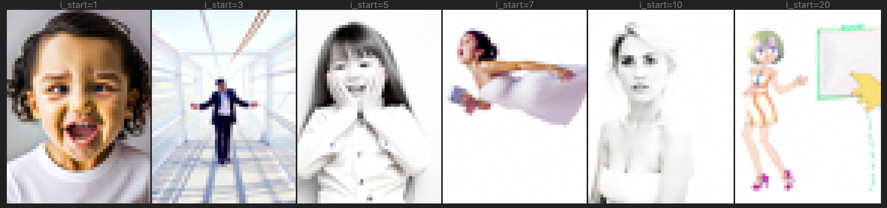
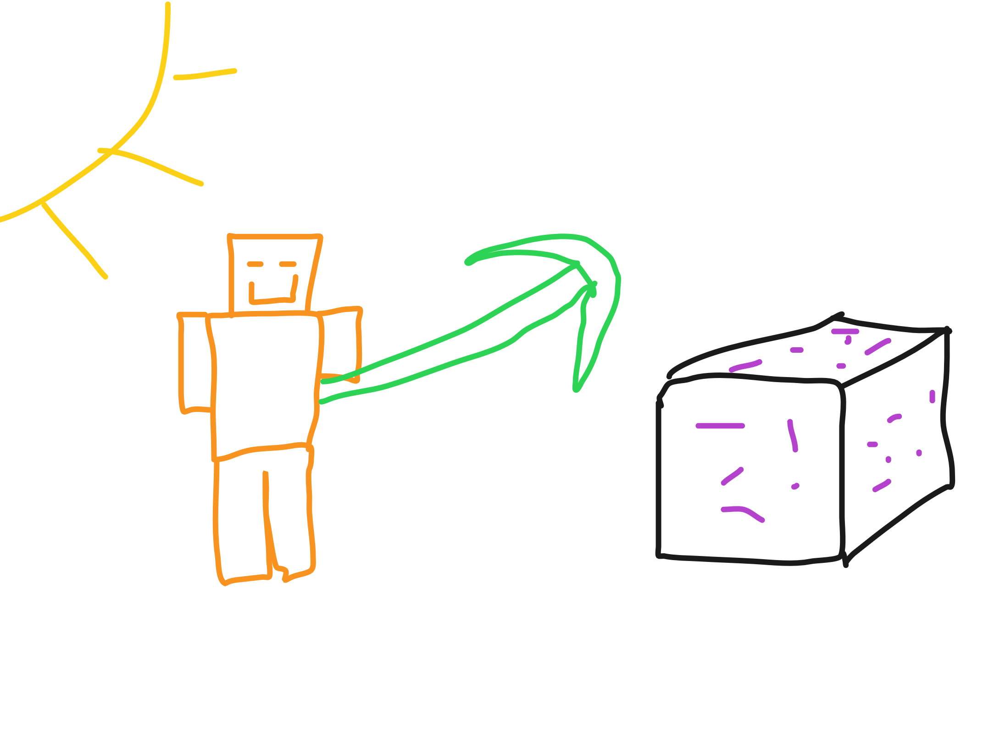
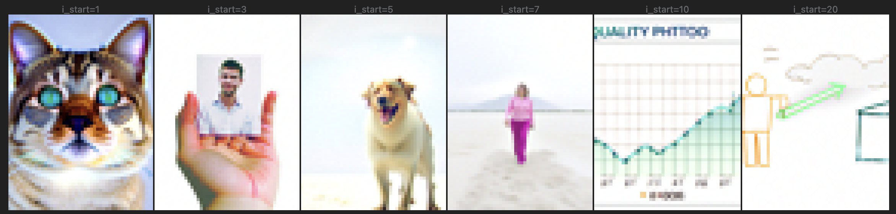
Inpainting lets us edit just part of an image while keeping the rest the same. We create a mask that marks which pixels to change. During the denoising loop, we replace the unmasked pixels with the original image (plus appropriate noise for that timestep) at each step. This forces the model to only change the masked region while blending it naturally with the surroundings.
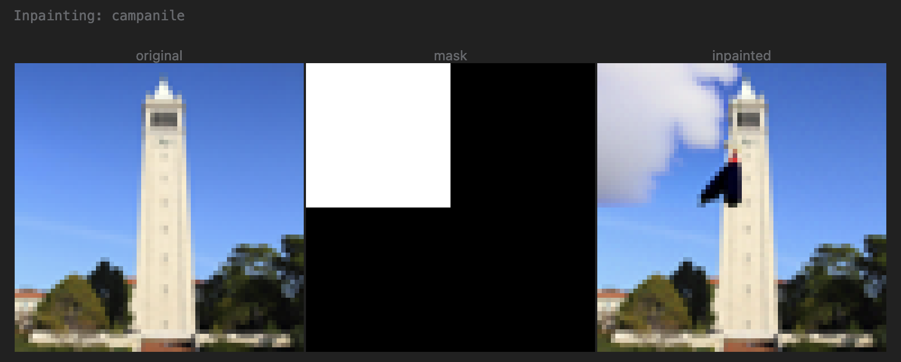
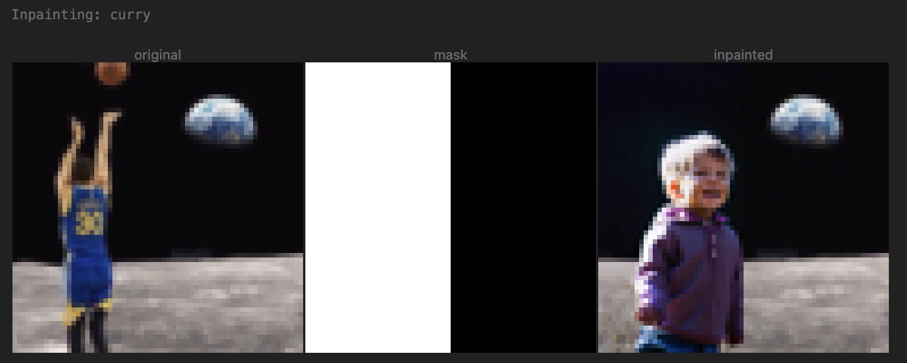
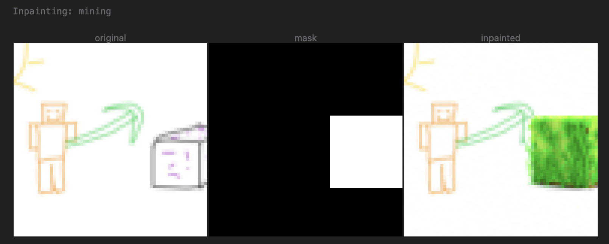
This is like the image-to-image translation from before, but now we use specific text prompts to guide the edits instead of just "a high quality photo". The model tries to change the image to match the text while keeping the overall structure. I tried different prompts on my test images:
Campanile with "basketball hoop":
Curry with "soccer ball on grass":
Mining with "stephen curry shooting a three":
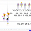
Visual anagrams are images that look like one thing right-side up and something different when flipped upside down. To create these, I modified the denoising process. At each step, I run the UNet twice - once on the normal image with prompt 1, and once on the flipped image with prompt 2. Then I average the two noise predictions (flipping the second one back). This makes the model try to satisfy both prompts at once, creating the illusion.
Anagram 1: Minecraft grass block / Stack of wooden blocks
Anagram 2: Set of dice / Pile of gold coins
Hybrid images look like one thing up close and something else from far away. This works because we see high frequencies (fine details) up close and low frequencies (overall shape/color) from far. To make these, I run the UNet twice with different prompts. I take the low frequencies from the first noise prediction and the high frequencies from the second. The low-pass filter is just a Gaussian blur, and the high-pass is the original minus the blurred version.
Hybrid 1: Formula one race car (close) / City skyline (far)

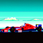
Hybrid 2: Lithograph of a skull (close) / Lithograph of waterfalls (far)

In this part, I built and trained my own model to generate handwritten digits. The idea is to start with random noise and slowly clean it up until it looks like a real digit.
A UNet is a neural network shaped like the letter U. It shrinks the image down, then expands it back up. The key trick is "skip connections" where we save info from the shrinking part and add it back during the expanding part. This helps keep details that would otherwise get lost. I built it from small pieces including Conv layers that look at small patches, DownConv layers that shrink by half, UpConv layers that grow by 2x, and Flatten/Unflatten layers that squish the image to a tiny size then expand it back.
To train a denoiser, we need noisy images. We make them by adding random noise to clean images using the formula $z = x + \sigma \cdot \text{noise}$. Here $\sigma$ controls how much noise we add. Bigger sigma means more noise:
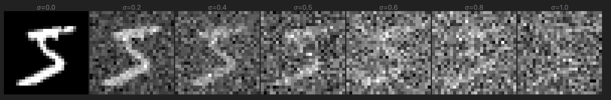
The goal is to take a noisy image and predict the clean version. For training, I take clean digits from the dataset, add noise using $\sigma = 0.5$, feed the noisy image to the UNet, compare the output to the original clean image, and update the network to make better predictions. I used batch size 256, learning rate 1e-4, hidden size D=128, and trained for 5 epochs.
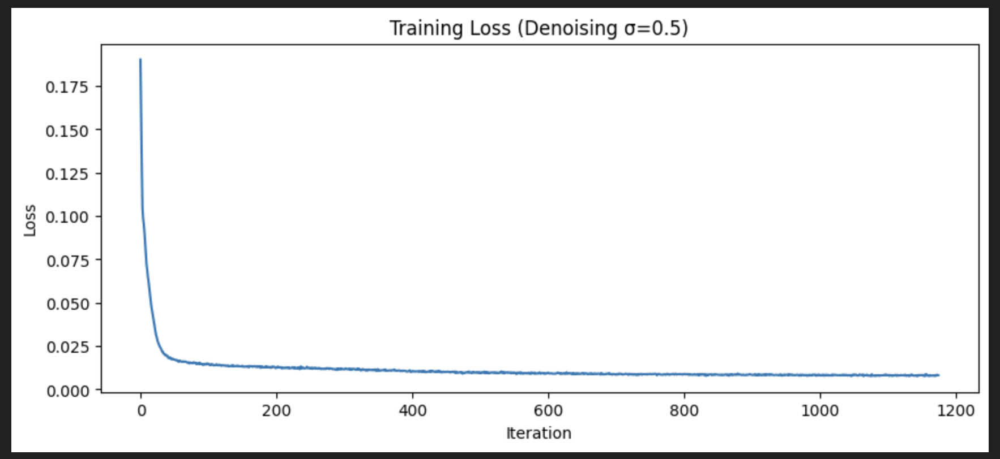
Results after epoch 1:
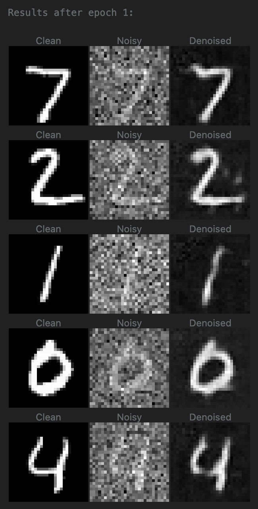
Results after epoch 5:
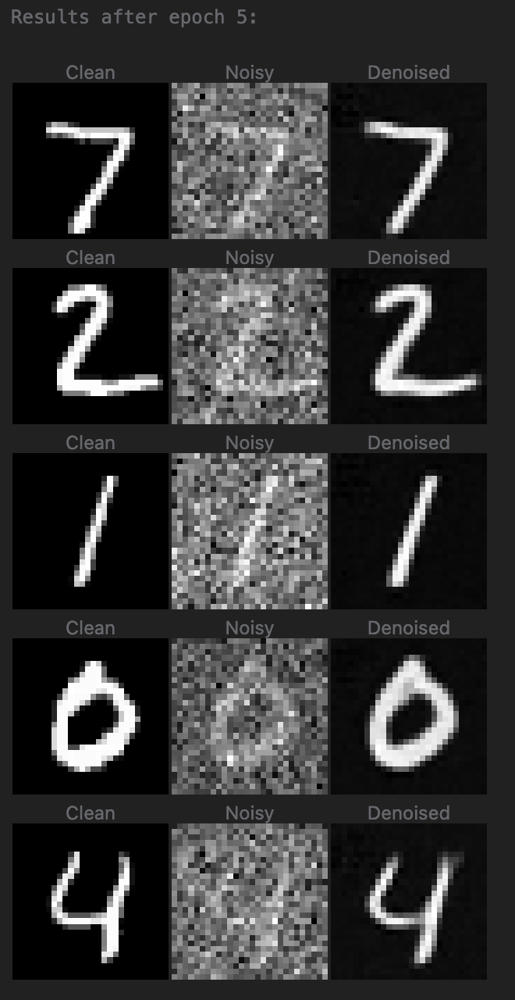
By epoch 5, the model is much better at cleaning up the noise.
We trained on $\sigma = 0.5$. What if we test on different noise levels? It works okay near $\sigma = 0.5$ but struggles with very different noise levels. Makes sense since the model only learned one noise level.
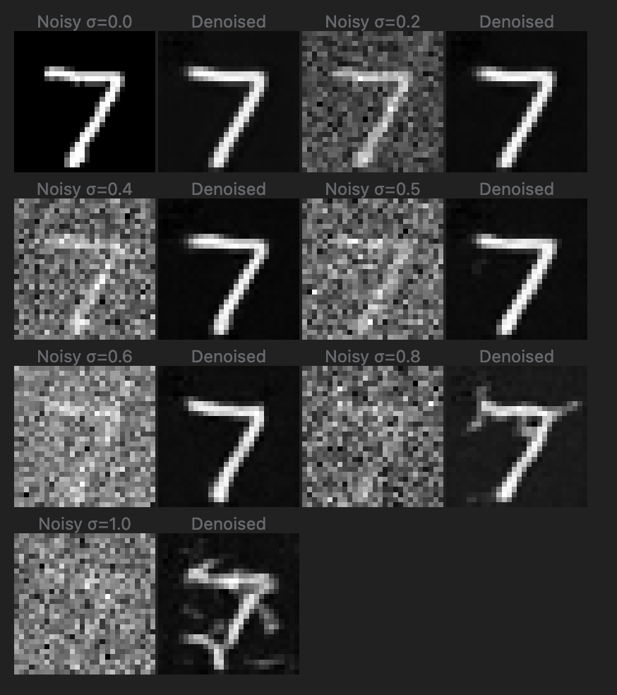
What if we try to generate digits from pure random noise? I trained a new model where the input is pure noise and the target is a clean digit. The outputs look like blurry blobs that kind of resemble digits. This happens because the model is confused - random noise could become any digit. So the model outputs something close to ALL digits at once, which ends up being a blurry average.
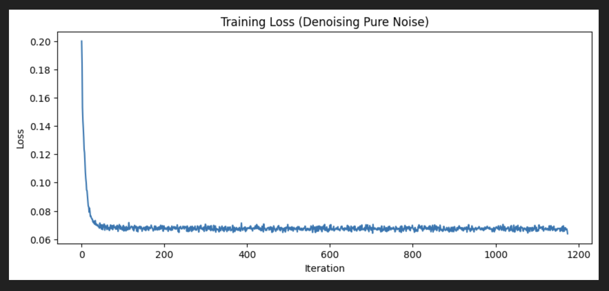
Results after epoch 1:
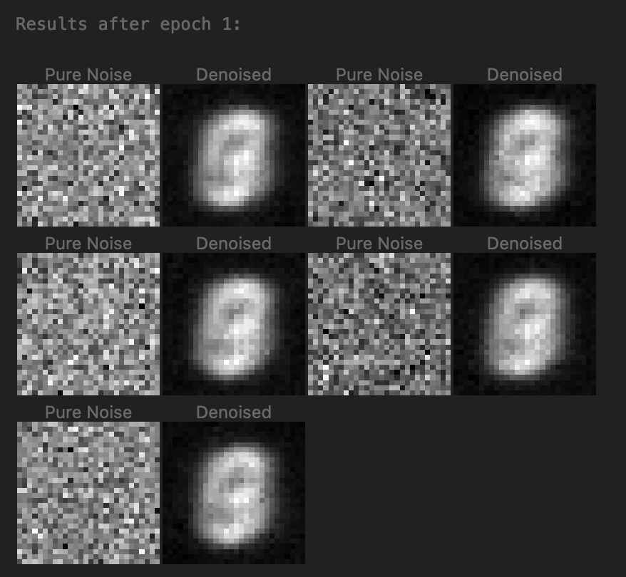
Results after epoch 5:
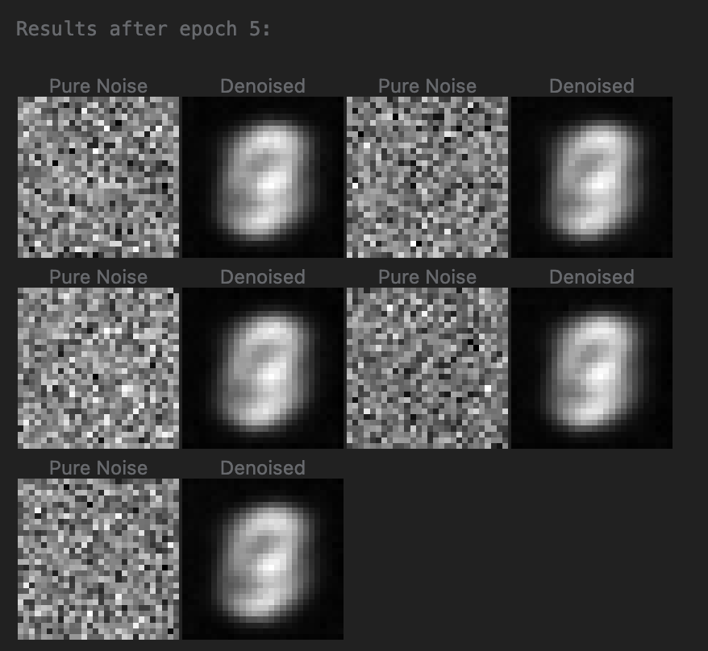
One-step denoising doesn't work well for making new images. Flow matching is better because it cleans up the image bit by bit over many small steps.
Imagine a path from noise to a clean image. At each point on the path, we have a mix: $x_t = (1-t) \cdot \text{noise} + t \cdot \text{clean image}$. When $t=0$, we have pure noise. When $t=1$, we have the clean image. The "flow" is the direction we need to move at each step: $\text{flow} = \text{clean image} - \text{noise}$. We train a UNet to predict this flow at any point $t$.
The UNet needs to know what time step we're at. I added this by taking the time $t$ (a number from 0 to 1), passing it through small neural networks called FCBlocks, and using the output to scale certain layers in the UNet. The modulation formulas are $\text{unflatten} = \text{unflatten} \times t_1$ and $\text{up1} = \text{up1} \times t_2$.
For training, I pick a random clean image, pick random noise, pick a random time $t$ between 0 and 1, mix them together to get $x_t$, ask the UNet to predict the flow, and compare to the true flow which is just the clean image minus the noise. I used batch size 64, D=64, learning rate 1e-2 with exponential decay, and trained for 10 epochs.
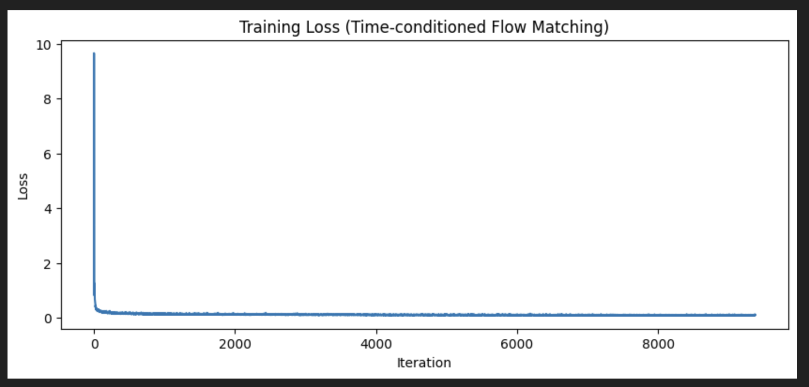
To generate new images, I start with random noise and take many small steps from $t=0$ to $t=1$. At each step, the UNet predicts the flow direction and we move a little bit in that direction. After all the steps, we have a clean image. Here are 5 samples at epochs 1, 5, and 10. The digits get cleaner as training progresses, but we can't control which digit we get.
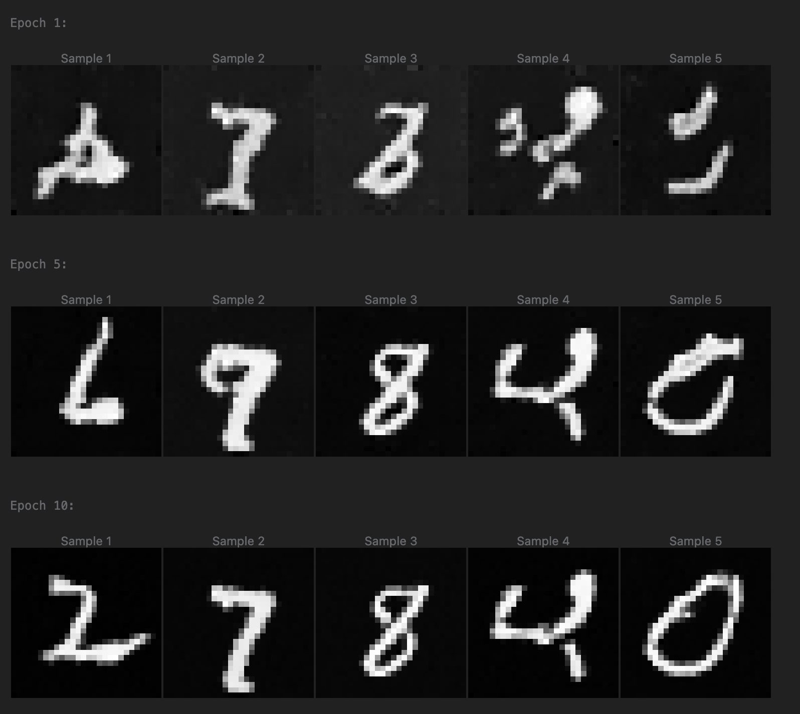
To control which digit we make, we tell the UNet what class (0-9) we want. I turn the class number into a one-hot vector, pass it through FCBlocks like we did with time, and use both class and time to control the UNet layers. The formula becomes $\text{unflatten} = c_1 \times \text{unflatten} + t_1$. During training, we randomly ignore the class 10% of the time. This teaches the model to work with or without class info, which helps at generation time for classifier-free guidance.
Same settings as before. The loss goes down smoothly:
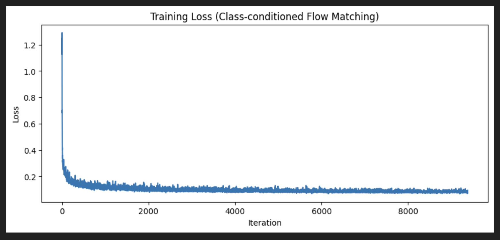
For generation I used classifier-free guidance. This means running the model twice - once with class info, once without - and pushing harder in the "with class" direction using the formula $\text{flow} = (1 + \gamma) \cdot \text{flow}_\text{with class} - \gamma \cdot \text{flow}_\text{without class}$. I used $\gamma = 5$ which makes the digits cleaner and more distinct.
Epoch 1:
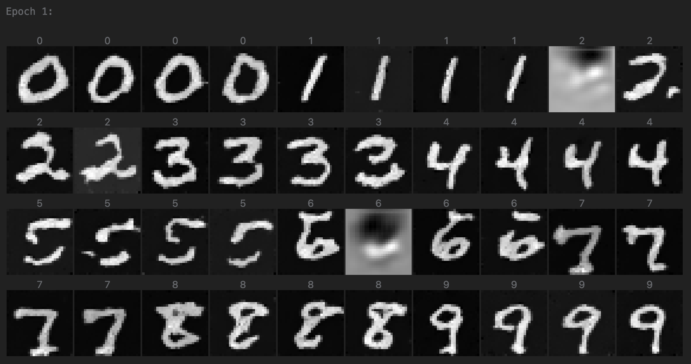
Epoch 5:
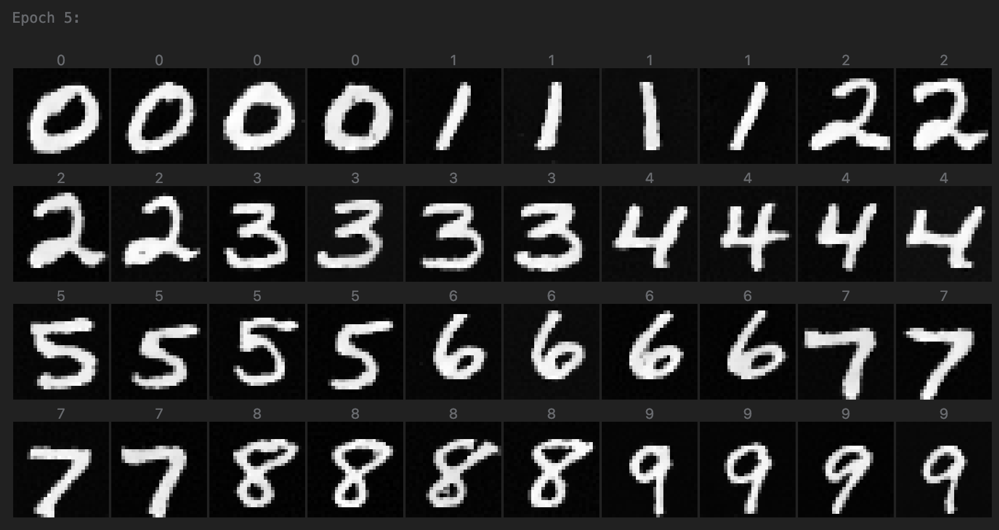
Epoch 10:
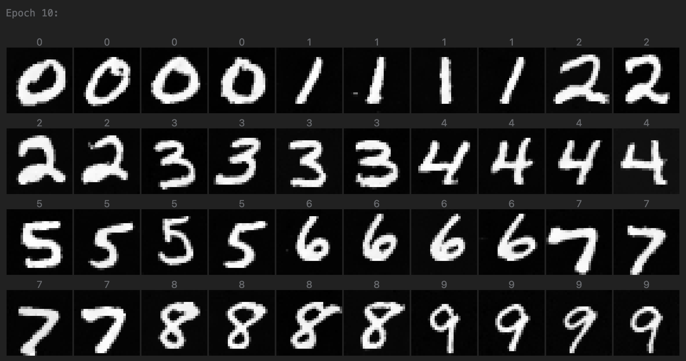
By epoch 10, the model makes clean digits that match what we ask for.
The original training used a learning rate that starts high (1e-2) and slowly gets smaller. I tried using a constant learning rate of 1e-3 instead. This is lower than the starting rate but similar to where the scheduler ends up. The idea is that if we can't start high and decay, we should just stay at a safe middle value. The results look about the same, so a constant lower learning rate works fine as a simpler option.
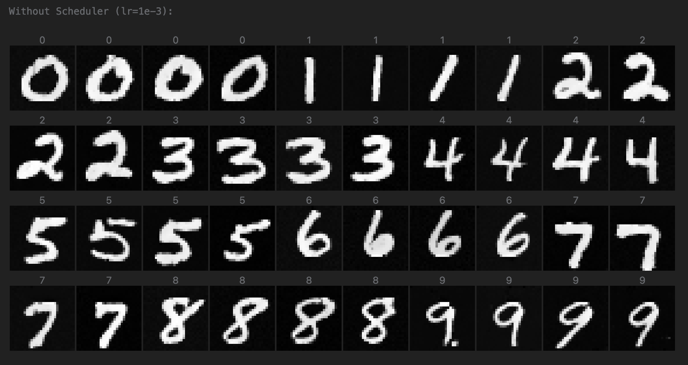